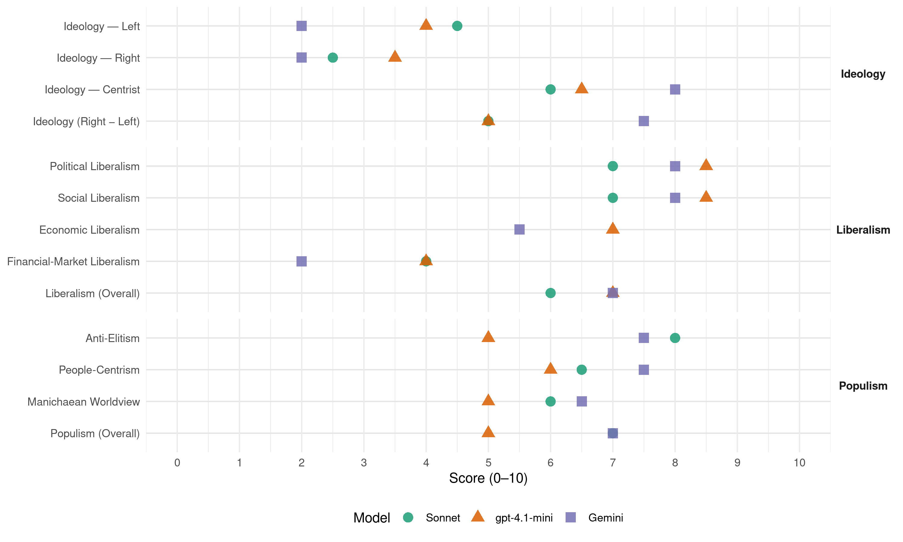

APB (Bolivia, 2009)
manifesto_id 151617_200912
Get full text: This site shows derived annotations and short verbatim quotes only. The full manifesto text is © Manifesto Project / WZB — obtain it via manifesto-project.wzb.eu using the manifesto_id above.
Headline scores
| Dimension | Sonnet | gpt-4.1-mini | Gemini |
|---|---|---|---|
| Populism (Overall) | 7.0 | 5.0 | 7.0 |
| Anti-Elitism | 8.0 | 5.0 | 7.5 |
| People-Centrism | 6.5 | 6.0 | 7.5 |
| Manichaean Worldview | 6.0 | 5.0 | 6.5 |
| Ideology (Right − Left) | 5.0 | 5.0 | 7.5 |
| Liberalism (Overall) | 6.0 | 7.0 | 7.0 |
| Political Liberalism | 7.0 | 8.5 | 8.0 |
| Social Liberalism | 7.0 | 8.5 | 8.0 |
| Economic Liberalism | – | 7.0 | 5.5 |
| Financial-Market Liberalism | 4.0 | 4.0 | 2.0 |
Evidence per dimension
Economic Liberalism
Gemini · score 7.0 · verified · chunk 1
“Incentivo y Desarrollo Del Sistema de la Empresa Privada”
9.Función Social De La Propiedad 10.Libre Asociación 11.Incentivo y Desarrollo Del Sistema de la Empresa Privada 12.Incentivo y Desarrollo de la Empresa
Gemini · score 4.0 · verified · chunk 2
“mercado no determine las necesidades y la orientación”
construir un nuevo sistema económico en el que el mercado no determine las necesidades y la orientación de la sociedad
gpt-4.1-mini · score 8.0 · verified · chunk 1
“una economía de mercado y humana, productiva y social”
El “Modelo Económico Autonómico del Desarrollo Boliviano” impulsa una economía eficiente y moderna, equitativa en la distribución de oportunidades, responsabilidades y beneficios: una economía de mercado y humana, productiva y social se sustentada en el trabajo libre, respetuoso de la dignidad humana y del medio ambiente,
gpt-4.1-mini · score 6.0 · verified · chunk 2
“un crecimiento económico planificado, armónico y equitativo entre los Departamentos del País”
…La sustentabilidad consiste en la preservación actual de los recursos humanos y naturales, de tal manera, que no se cancele la viabilidad del desarrollo en el futuro. Aspiramos a un crecimiento económico planificado, armónico y equitativo entre los Departamentos del País, entre la ciudad y el campo; entre el trabajo y el capital y entre el mercado mundial y el mercado nacional. La inequidad en la distribución del ingreso, la ineficiencia gubernamental, la corrupción y el autoritarismo, agreden al medio ambiente…
Sonnet · score 6.0 · mixed · chunk 1
“economía de mercado y humana, productiva y social”
generará una economía de mercado y humana, productiva y social… El mercado es condición necesaria para el desarrollo económico
Sonnet · score 5.0 · mixed · chunk 2
“el mercado no determine las necesidades y la orientación de la sociedad”
construir un nuevo sistema económico en el que el mercado no determine las necesidades y la orientación de la sociedad, sino que sea ésta la que determine la orientación
Financial-Market Liberalism
Gemini · score 2.0 · verified · chunk 2
“eliminación de la especulación financiera”
nuevo orden mundial basado en la distribución, entre todos los pueblos, de los beneficios del conocimiento científico y técnico, en la eliminación de la especulación financiera, en un comercio mundial equitativo
gpt-4.1-mini · score 5.0 · verified · chunk 1
“transparencia absoluta”
El “Modelo Económico Autonómico del Desarrollo Boliviano” tiene como misión el asegurar a cada ciudadano una existencia digna, basándose en el ímpetu y pujanza del individuo como parte de la sociedad boliviana y observa los siguientes principios: … 8.Transparencia Absoluta …
gpt-4.1-mini · score 3.0 · verified · chunk 2
“pugnará por la existencia de un derecho internacional justo y equitativo, en particular en la aplicación de leyes y regulaciones al capital financiero especulativo”
…“AUTONOMÍA PARA BOLIVIA”- APB, pugnará por la existencia de un derecho internacional justo y equitativo, en particular en la aplicación de leyes y regulaciones al capital financiero especulativo. “AUTONOMÍA PARA BOLIVIA”- APB, reclama la obligación de la comunidad internacional de ayudar a los países rezagados y tiene fe en que los pueblos del mundo serán capaces de orientar hacia la paz…
Sonnet · score 5.0 · verified · chunk 1
“Banco de la Revolución Productiva”
Protección e Incentivo Del Sector Productivo, mediante un Banco de la Revolución Productiva.
Sonnet · score 3.0 · verified · chunk 2
“eliminación de la especulación financiera”
en la eliminación de la especulación financiera, en un comercio mundial equitativo y en la libre circulación y divulgación de los bienes culturales
Political Liberalism
Gemini · score 8.0 · verified · chunk 1
“adhesión inquebrantable a la causa autonómica de Bolivia”
junto con reafirmar nuestra profunda vocación patriótica, ratificamos nuestra adhesión inquebrantable a la causa autonómica de Bolivia, porque creemos con firmeza
Gemini · score 8.0 · verified · chunk 2
“existencia de un Estado democrático de derecho”
De su pleno reconocimiento y protección jurídica depende la existencia de un Estado democrático de derecho.
gpt-4.1-mini · score 9.0 · verified · chunk 1
“la plena vigencia de los derechos humanos”
una sociedad libre, justa, autonómica, plural, participativa, progresista, democrática, soberana y solidaria, de modo que se asegure la plena vigencia de los derechos humanos.
gpt-4.1-mini · score 8.0 · verified · chunk 2
“los derechos humanos alientan la vida de una auténtica democracia”
…28.-AUTONOMÍA PARA BOLIVIA Y LOS DERECHOS HUMANOS Los derechos humanos alientan la vida de una auténtica democracia. Son expresión concreta de la dignidad humana. Sin respeto cabal a los derechos humanos, no hay democracia. De su pleno reconocimiento y protección jurídica depende la existencia de un Estado democrático de derecho. “AUTONOMÍA PARA BOLIVIA”- APB, promueve el reconocimiento y el respeto universal de los derechos de la persona…
Sonnet · score 7.0 · verified · chunk 1
“construir la Democracia de los ciudadanos”
Nos corresponde frente a la Dictadura de partidos, construir la Democracia de los ciudadanos, la Democracia Participativa
Sonnet · score 7.0 · verified · chunk 2
“derechos humanos alientan la vida de una auténtica democracia”
Los derechos humanos alientan la vida de una auténtica democracia. Son expresión concreta de la dignidad humana. Sin respeto cabal a los derechos humanos, no hay democracia
Liberalism (Overall)
Gemini · score 8.0 · verified · chunk 1
“plena vigencia de los derechos humanos y la igualdad de oportunidades”
democrática, soberana y solidaria, de modo que se asegure la plena vigencia de los derechos humanos y la igualdad de oportunidades.
Gemini · score 6.0 · verified · chunk 2
“existencia de un Estado democrático de derecho”
De su pleno reconocimiento y protección jurídica depende la existencia de un Estado democrático de derecho.
gpt-4.1-mini · score 8.0 · verified · chunk 1
“una sociedad libre, justa, autonómica, plural, participativa, progresista, democrática, soberana y solidaria”
una sociedad libre, justa, autonómica, plural, participativa, progresista, democrática, soberana y solidaria, de modo que se asegure la plena vigencia de los derechos humanos y la igualdad de oportunidades.
gpt-4.1-mini · score 6.0 · verified · chunk 2
“los derechos humanos alientan la vida de una auténtica democracia”
…28.-AUTONOMÍA PARA BOLIVIA Y LOS DERECHOS HUMANOS Los derechos humanos alientan la vida de una auténtica democracia. Son expresión concreta de la dignidad humana. Sin respeto cabal a los derechos humanos, no hay democracia. De su pleno reconocimiento y protección jurídica depende la existencia de un Estado democrático de derecho. “AUTONOMÍA PARA BOLIVIA”- APB, promueve el reconocimiento y el respeto universal de los derechos de la persona…
Sonnet · score 6.0 · verified · chunk 1
“plena vigencia de los derechos humanos”
sociedad libre, justa, autonómica, plural, participativa, progresista, democrática, soberana y solidaria, de modo que se asegure la plena vigencia de los derechos humanos
Sonnet · score 5.0 · mixed · chunk 2
“derechos humanos alientan la vida de una auténtica democracia”
Los derechos humanos alientan la vida de una auténtica democracia. Son expresión concreta de la dignidad humana. Sin respeto cabal a los derechos humanos, no hay democracia
Anti-Elitism
Gemini · score 9.0 · verified · chunk 1
“una voraz e insensible Partidocracia, generadora de privilegios”
Lo que rige, desde ayer, desde hoy y desde siempre, es una voraz e insensible Partidocracia, generadora de privilegios, de corrupción, de insensibilidad social
Gemini · score 6.0 · verified · chunk 2
“ineficiencia gubernamental, la corrupción y el autoritarismo”
La inequidad en la distribución del ingreso, la ineficiencia gubernamental, la corrupción y el autoritarismo, agreden al medio ambiente.
gpt-4.1-mini · score 7.0 · verified · chunk 1
“la Oligarquía de Izquierda es idéntica a la Oligarquía de Derecha”
Quienes hasta hace poco tiempo se llenaban la boca diciendo que eran la solución a los grandes problemas del País, lo único que han demostrado es que la Oligarquía de Izquierda es idéntica a la Oligarquía de Derecha.Se ha mentido y se ha engañado al pueblo.
gpt-4.1-mini · score 3.0 · verified · chunk 2
“La inequidad en la distribución del ingreso, la ineficiencia gubernamental, la corrupción y el autoritarismo, agreden al medio ambiente.”
…armónico y equitativo entre los Departamentos del País, entre la ciudad y el campo; entre el trabajo y el capital y entre el mercado mundial y el mercado nacional. La inequidad en la distribución del ingreso, la ineficiencia gubernamental, la corrupción y el autoritarismo, agreden al medio ambiente. Un sistema político responsable y ordenado previene y mitiga los impactos nocivos al ambiente. Es fundamental la participación corresponsable de todos los ciudadanos…
Sonnet · score 8.0 · verified · chunk 1
“voraz e insensible Partidocracia, generadora de privilegios”
Lo que rige, desde ayer, desde hoy y desde siempre, es una voraz e insensible Partidocracia, generadora de privilegios, de corrupción, de insensibilidad social y de ineptitud administrativa.
Sonnet · score 5.0 · mixed · chunk 2
“experimentos de Izquierdas y Derechas que destrozaron nuestra nación”
por culpa de esos constantes experimentos de Izquierdas y Derechas que destrozaron nuestra nación. Por ello, AUTONOMÍA PARA BOLIVIA
Ideology — Centrist
Gemini · score 9.0 · verified · chunk 1
“Agrupación Política que NO es de Izquierda Ni de Derecha”
“AUTONOMÍA PARA BOLIVIA”- APB, se asume como una Agrupación Política que NO es de Izquierda Ni de Derecha nuestra ideología se basa en la realidad
Gemini · score 7.0 · verified · chunk 2
“Imperialistas de tendencias de Izquierdas o Derechas”
tomar sus propias decisiones sin interferencias o presiones provenientes de extranjeros ya sean estos Imperialistas de tendencias de Izquierdas o Derechas (enanos o gigantes).
gpt-4.1-mini · score 8.0 · verified · chunk 1
“Somos simplemente patriotas”
“AUTONOMÍA PARA BOLIVIA”- APB, se asume como una Agrupación Política que NO es de Izquierda Ni de Derecha nuestra ideología se basa en la realidad de la sociedad y las necesidades de nuestra Patria. Somos simplemente patriotas.
gpt-4.1-mini · score 5.0 · verified · chunk 2
“la participación Directa y Organizada del Pueblo, no existe una verdadera Democracia”
…Segundo: La Democracia Participativa: Sin la participación Directa y Organizada del Pueblo, no existe una verdadera Democracia. Tercero: La Revolución Productiva: Solo la Producción e Industrialización de los Recursos Naturales terminara con el neocolonialismo del saqueo de las materias primas. Cuarto: La Revolución Moral: Terminar con la corrupción en todos los niveles. Sin Moral no existe Patria…
Sonnet · score 7.0 · verified · chunk 1
“NO es de Izquierda Ni de Derecha”
APB, se asume como una Agrupación Política que NO es de Izquierda Ni de Derecha nuestra ideología se basa en la realidad de la sociedad
Sonnet · score 5.0 · verified · chunk 2
“Imperialistas de tendencias de Izquierdas o Derechas”
sin interferencias o presiones provenientes de extranjeros ya sean estos Imperialistas de tendencias de Izquierdas o Derechas (enanos o gigantes)
Ideology — Left
Gemini · score 2.0 · verified · chunk 1
“porque no tiene principios cristianos ya que es atea”
Pero la alternativa no podía ser la Izquierda por dos motivos: porque no tiene principios cristianos ya que es atea, y porque es colectivista
gpt-4.1-mini · score 4.0 · verified · chunk 1
“la izquierda vende las mismas quimeras que la derecha”
la izquierda vende las mismas quimeras que la derecha, la partidocracia de izquierda es idéntica a la partidocracia de derecha; en conclusión, ni unos ni otros, cubren la expectativa y las necesidades del sistema democrático y mucho menos de la sociedad civil,
gpt-4.1-mini · score 4.0 · verified · chunk 2
“eliminar progresivamente la explotación, la pobreza y las desigualdades, haciendo posible el acceso de las bolivianas y los bolivianos a los beneficios materiales y culturales”
…sea ésta la que determine la orientación y el carácter del mercado. Para ello, se requiere incorporar a empresarios y trabajadores a la planificación económica y social, con el objetivo de eliminar progresivamente la explotación, la pobreza y las desigualdades, haciendo posible el acceso de las bolivianas y los bolivianos a los beneficios materiales y culturales que les permita un mejoramiento permanente de su nivel y calidad de vida. “AUTONOMÍA PARA BOLIVIA”- APB, se pronuncia por armonizar la necesidad de desarrollo económico y tecnológico con la conservación del medio ambiente…
Sonnet · score 4.0 · verified · chunk 1
“distribuirla equitativamente entre los grandes sectores sociales deprimidos”
Creemos en el trabajo como fuente generadora de riqueza, para distribuirla equitativamente entre los grandes sectores sociales deprimidos y marginados
Sonnet · score 5.0 · verified · chunk 2
“eliminar progresivamente la explotación, la pobreza y las desigualdades”
con el objetivo de eliminar progresivamente la explotación, la pobreza y las desigualdades, haciendo posible el acceso de las bolivianas y los bolivianos
Ideology (Right − Left)
Gemini · score 8.0 · verified · chunk 1
“nuestra ideología se basa en la realidad de la sociedad”
Agrupación Política que NO es de Izquierda Ni de Derecha nuestra ideología se basa en la realidad de la sociedad y las necesidades de nuestra Patria.
Gemini · score 7.0 · verified · chunk 2
“Imperialistas de tendencias de Izquierdas o Derechas”
tomar sus propias decisiones sin interferencias o presiones provenientes de extranjeros ya sean estos Imperialistas de tendencias de Izquierdas o Derechas (enanos o gigantes).
gpt-4.1-mini · score 6.0 · verified · chunk 1
“la partidocracia de izquierda es idéntica a la partidocracia de derecha”
la izquierda vende las mismas quimeras que la derecha, la partidocracia de izquierda es idéntica a la partidocracia de derecha; en conclusión, ni unos ni otros, cubren la expectativa y las necesidades del sistema democrático y mucho menos de la sociedad civil,
gpt-4.1-mini · score 4.0 · verified · chunk 2
“la participación Directa y Organizada del Pueblo, no existe una verdadera Democracia”
…Segundo: La Democracia Participativa: Sin la participación Directa y Organizada del Pueblo, no existe una verdadera Democracia. Tercero: La Revolución Productiva: Solo la Producción e Industrialización de los Recursos Naturales terminara con el neocolonialismo del saqueo de las materias primas. Cuarto: La Revolución Moral: Terminar con la corrupción en todos los niveles. Sin Moral no existe Patria…
Sonnet · score 5.0 · verified · chunk 1
“bolivianos para los bolivianos”
APB como agrupación política dará las soluciones… ya que tiene una Ideología Propia: ‘bolivianos para los bolivianos’.
Sonnet · score 4.0 · mixed · chunk 2
“Izquierdas o Derechas (Azules o Rojos)”
contra toda forma de imperialismo y colonialismo venga este de Izquierda o de Derecha (Azules o Rojos); respalda el rechazo colectivo de la agresión
Ideology — Right
Gemini · score 2.0 · verified · chunk 1
“afán de enriquecimiento que produce la derecha”
muchos bolivianos al interior y exterior de nuestra Nación, como resultado del afán de enriquecimiento que produce la derecha; Pero la alternativa
gpt-4.1-mini · score 4.0 · verified · chunk 1
“la partidocracia de izquierda es idéntica a la partidocracia de derecha”
la izquierda vende las mismas quimeras que la derecha, la partidocracia de izquierda es idéntica a la partidocracia de derecha; en conclusión, ni unos ni otros, cubren la expectativa y las necesidades del sistema democrático y mucho menos de la sociedad civil,
gpt-4.1-mini · score 3.0 · verified · chunk 2
“luchar por liberar al País y al pueblo de Bolivia de toda forma de dominación extranjera que se sustente en la fuerza militar o en el poder económico y político”
…y considera que la generación y aplicación de conocimientos debe ser una herramienta básica al servicio de la soberanía de las naciones y para promover un desarrollo equitativo, sustentable y justo. “AUTONOMÍA PARA BOLIVIA”- APB, se compromete a luchar por liberar al País y al pueblo de Bolivia de toda forma de dominación extranjera que se sustente en la fuerza militar o en el poder económico y político venga del este, del sur, del norte o del oeste de enanos o gigantes. “AUTONOMÍA PARA BOLIVIA”- APB, defenderá el derecho de las bolivianas y bolivianos a decidir libremente sobre su presente y su futuro…
Sonnet · score 2.0 · verified · chunk 1
“BOLIVIA PRIMERO”
si es que asumimos que somos chapacos, collas o cambas… o simplemente somos ante todo primero bolivianos. Claro y fuerte: BOLIVIA PRIMERO.
Sonnet · score 3.0 · verified · chunk 2
“soberanía de las naciones”
en la prioridad del desarrollo humano sustentable, en especial de las economías más pobres, y en el respeto a la soberanía de las naciones
Manichaean Worldview
Gemini · score 8.0 · verified · chunk 1
“Castas Delincuenciales “ de Izquierdistas y Derechistas”
resultado de ese “Canibalismo Político” y de las “Castas Delincuenciales “ de Izquierdistas y Derechistas, que usan al Pueblo para llegar al Poder
Gemini · score 5.0 · verified · chunk 2
“experimentos de Izquierdas y Derechas que destrozaron”
por el solo hecho de haber salido fuera de nuestra Patria por culpa de esos constantes experimentos de Izquierdas y Derechas que destrozaron nuestra nación.
gpt-4.1-mini · score 7.0 · verified · chunk 1
“odio, la violencia y la discordia apocalíptica”
han provocado disensiones irreconciliables a lo largo de nuestra historia donde ha campeado el odio, la violencia y la discordia apocalíptica.Esta Torre de Babel política no sólo ha acentuado un clima de crispación y de intolerancia, sino que, además, ha llevado a extremos críticos la pobreza, el hambre, la desocupación y la criminalidad creciente,
gpt-4.1-mini · score 3.0 · verified · chunk 2
“luchar por liberar al País y al pueblo de Bolivia de toda forma de dominación extranjera que se sustente en la fuerza militar o en el poder económico y político”
…y considera que la generación y aplicación de conocimientos debe ser una herramienta básica al servicio de la soberanía de las naciones y para promover un desarrollo equitativo, sustentable y justo. “AUTONOMÍA PARA BOLIVIA”- APB, se compromete a luchar por liberar al País y al pueblo de Bolivia de toda forma de dominación extranjera que se sustente en la fuerza militar o en el poder económico y político venga del este, del sur, del norte o del oeste de enanos o gigantes. “AUTONOMÍA PARA BOLIVIA”- APB, defenderá el derecho de las bolivianas y bolivianos a decidir libremente sobre su presente y su futuro…
Sonnet · score 6.0 · verified · chunk 1
“Oligarquía de Izquierda es idéntica a la Oligarquía de Derecha”
lo único que han demostrado es que la Oligarquía de Izquierda es idéntica a la Oligarquía de Derecha. Se ha mentido y se ha engañado al pueblo.
Sonnet · score 4.0 · mixed · chunk 2
“toda forma de dominación extranjera”
luchar por liberar al País y al pueblo de Bolivia de toda forma de dominación extranjera que se sustente en la fuerza militar o en el poder económico
People-Centrism
Gemini · score 8.0 · verified · chunk 1
“Se ha mentido y se ha engañado al pueblo”
Oligarquía de Izquierda es idéntica a la Oligarquía de Derecha. Se ha mentido y se ha engañado al pueblo. Lo que rige, desde ayer
Gemini · score 7.0 · verified · chunk 2
“participación Directa y Organizada del Pueblo”
Segundo: La Democracia Participativa: Sin la participación Directa y Organizada del Pueblo, no existe una verdadera Democracia.
gpt-4.1-mini · score 8.0 · verified · chunk 1
“el pueblo tenga credibilidad y confianza en sus gobernantes”
un país mejor donde el sol brille para todos y donde cada noche podamos descansar con seguridad y con paz; donde el pueblo tenga credibilidad y confianza en sus gobernantes, en el sentido que todos trabajan con sacrificio por el bien común, por la grandeza, la fuerza y la prosperidad de la Nación y de las generaciones del futuro.
gpt-4.1-mini · score 4.0 · verified · chunk 2
“La Nación boliviana es una realidad viva, abierta, multicultural y pluriétnica. Es cuna y espacio para el florecimiento de un vínculo específico que brinda elementos de unidad”
…Bolivia es parte de la comunidad mundial, en cuyo seno está llamada a desarrollarse con libertad, responsabilidad, justicia, solidaridad y en paz. La Bolivia es comunidad de comunidades, unidas por diversos vínculos, con origen y destino común. Se reconoce como la suma de sus partes y se enriquece con el aporte responsable de las mujeres y los hombres que la componen. Brinda comunión de pasado, de presente y de destino. La Nación boliviana es una realidad viva, abierta, multicultural y pluriétnica. Es cuna y espacio para el florecimiento de un vínculo específico que brinda elementos de unidad para quienes al identificarse con ella…
Sonnet · score 7.0 · verified · chunk 1
“Ha llegado la hora de los ciudadanos”
Es tiempo ya de desplazar del poder a las burguesías de Izquierda y de Derecha… Ha llegado la hora de los ciudadanos.
Sonnet · score 6.0 · verified · chunk 2
“el pueblo boliviano y todos los órdenes de gobierno”
El pueblo boliviano y todos los órdenes de gobierno deben actuar coordinada y permanentemente para evitar la degradación del medio ambiente
Populism (Overall)
Gemini · score 8.0 · verified · chunk 1
“desplazar del poder a las burguesías de Izquierda y de Derecha”
Es tiempo ya de desplazar del poder a las burguesías de Izquierda y de Derecha que se han tornado en el ejercicio omnipotente
Gemini · score 6.0 · verified · chunk 2
“participación Directa y Organizada del Pueblo”
Segundo: La Democracia Participativa: Sin la participación Directa y Organizada del Pueblo, no existe una verdadera Democracia.
gpt-4.1-mini · score 7.0 · verified · chunk 1
“la Oligarquía de Izquierda es idéntica a la Oligarquía de Derecha”
Quienes hasta hace poco tiempo se llenaban la boca diciendo que eran la solución a los grandes problemas del País, lo único que han demostrado es que la Oligarquía de Izquierda es idéntica a la Oligarquía de Derecha.Se ha mentido y se ha engañado al pueblo.
gpt-4.1-mini · score 3.0 · verified · chunk 2
“La inequidad en la distribución del ingreso, la ineficiencia gubernamental, la corrupción y el autoritarismo, agreden al medio ambiente.”
…armónico y equitativo entre los Departamentos del País, entre la ciudad y el campo; entre el trabajo y el capital y entre el mercado mundial y el mercado nacional. La inequidad en la distribución del ingreso, la ineficiencia gubernamental, la corrupción y el autoritarismo, agreden al medio ambiente. Un sistema político responsable y ordenado previene y mitiga los impactos nocivos al ambiente. Es fundamental la participación corresponsable de todos los ciudadanos…
Sonnet · score 7.0 · verified · chunk 1
“Castas Delincuenciales de Izquierdistas y Derechistas”
ese ‘Canibalismo Político’ y de las ‘Castas Delincuenciales’ de Izquierdistas y Derechistas, que usan al Pueblo para llegar al Poder
Sonnet · score 4.0 · mixed · chunk 2
“experimentos de Izquierdas y Derechas que destrozaron nuestra nación”
por culpa de esos constantes experimentos de Izquierdas y Derechas que destrozaron nuestra nación. Por ello, AUTONOMÍA PARA BOLIVIA
Social Liberalism